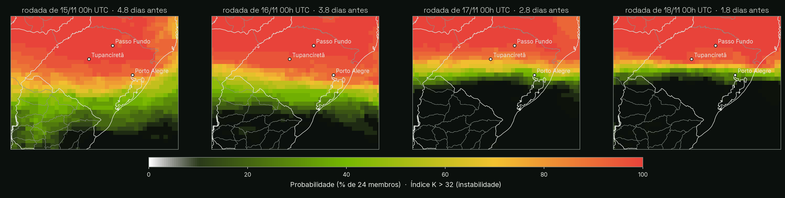
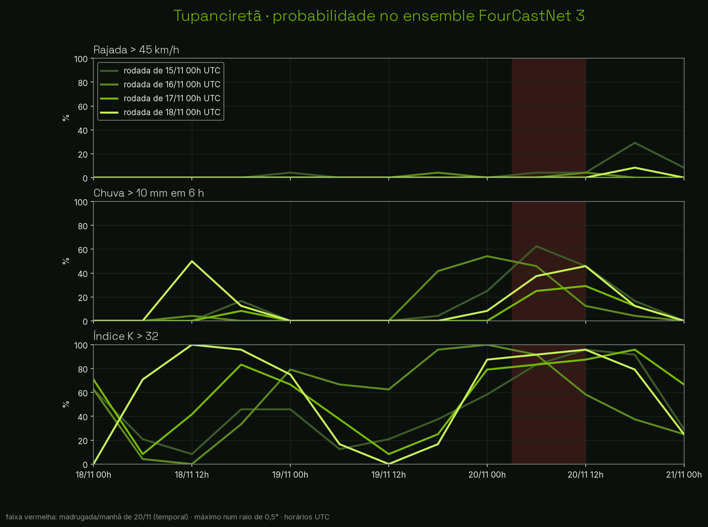
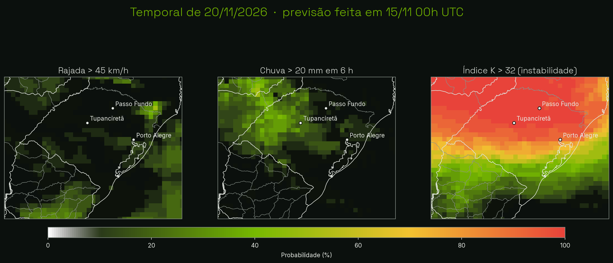
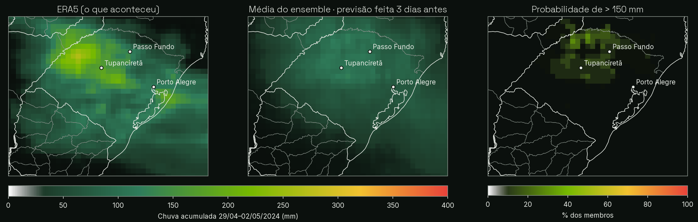
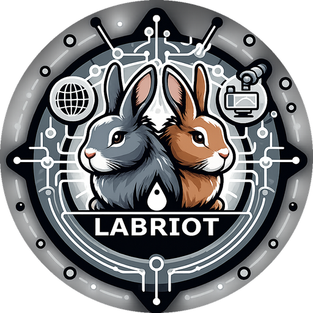

O que a IA teria visto dias antes do temporalWhat AI would have seen days before the storm
Na madrugada de 20 de novembro de 2026, um temporal atingiu Tupanciretã, no Rio Grande do Sul. Voltamos no tempo e rodamos o FourCastNet 3, um dos modelos de IA do NVIDIA Earth-2, a partir das condições de 15 a 18 de novembro, com 24 futuros possíveis em cada rodada.
Before dawn on November 20, 2026, a severe storm hit Tupanciretã, in Rio Grande do Sul, Brazil. We went back in time and ran FourCastNet 3, one of the NVIDIA Earth-2 AI models, from the conditions of November 15 to 18, with 24 possible futures in each run.
Temporal de 20/11/2026The November 20, 2026 storm
O ambiente do temporal aparece quase cinco dias antesThe storm environment shows up almost five days ahead
Cada mapa é uma previsão feita num dia diferente. A cor é a fração dos 24 membros em que a atmosfera sobre o lugar fica instável (Índice K acima de 32) entre 19/11 18h e 20/11 12h UTC. Vermelho quer dizer que quase todos os futuros possíveis concordam.
Each map is a forecast made on a different day. Colour is the fraction of the 24 members in which the atmosphere over that place becomes unstable (K-index above 32) between Nov 19 18 UTC and Nov 20 12 UTC. Red means almost all possible futures agree.



Enchente de maio de 2024The May 2024 flood
Três dias antes, o modelo apontou onde ia choverThree days ahead, the model pointed to where the rain would fall
Chuva acumulada de 29/04 a 02/05/2024, na previsão feita em 26/04 a partir do ERA5. A região está certa, o volume não: a média do ensemble chega a cerca de 120 mm sobre o RS, contra cerca de 270 mm no ERA5. Mesmo assim, 20 a 40 % dos membros passam de 150 mm no centro-norte do estado.
Rainfall from Apr 29 to May 2, 2024, in the forecast made on Apr 26 from ERA5. The region is right, the volume is not: the ensemble mean reaches about 120 mm over the state against about 270 mm in ERA5. Still, 20–40 % of members exceed 150 mm over the north-centre of the state.

O que o modelo não fazWhat the model does not do
Não enxerga o tornado nem a rajada que derruba o telhado. Numa grade de 25 km, a rajada máxima prevista sobre o RS ficou em cerca de 70 km/h. O que o modelo mostra é o ambiente de risco, com dias de antecedência.
It does not see the tornado or the gust that tears off a roof. On a 25 km grid, the highest forecast gust over the state was about 70 km/h. What the model shows is the risk environment, days ahead.
Não há ainda modelo regional para o Brasil. Os modelos do Earth-2 que descem para 2 a 3 km, como o StormCast e o CorrDiff, existem hoje só para EUA, Europa e Taiwan. Para o RS seria preciso treinar um, com dados brasileiros de alta resolução.
There is no regional model for Brazil yet. The Earth-2 models that go down to 2–3 km, such as StormCast and CorrDiff, currently exist only for the US, Europe and Taiwan. Rio Grande do Sul would need one trained on high-resolution Brazilian data.
É pesquisa, não alerta. Nada aqui substitui a previsão oficial nem as orientações da Defesa Civil.
This is research, not a warning service. Nothing here replaces official forecasts or civil defence guidance.
Como foi feitoHow it was done
Condição inicialInitial state
GFS (NOAA) para novembro de 2026 e ERA5 (Copernicus/ECMWF) para maio de 2024.
GFS (NOAA) for November 2026 and ERA5 (Copernicus/ECMWF) for May 2024.
FourCastNet 3
Modelo global e estocástico: 24 membros, cada um com uma semente diferente, em passos de 6 h.
Global stochastic model: 24 members, each with a different seed, in 6-hour steps.
DiagnósticosDiagnostics
Chuva (PrecipitationAFNO), rajada (WindgustAFNO) e Índice K calculado a partir de temperatura e umidade.
Rain (PrecipitationAFNO), gusts (WindgustAFNO) and K-index computed from temperature and humidity.
ProbabilidadeProbability
A fração dos membros que passa de cada limiar vira o mapa de chance.
The fraction of members above each threshold becomes the chance map.
Earth2Studio 0.20.0EventosEvents
Onde este projeto é apresentado.
Where this project is presented.
- 27nov · 2026Nov · 2026PróximoUpcoming
IA Summit Passo FundoIA Summit Passo Fundo
UPF Parque, Passo Fundo (RS)
UPF Parque, Passo Fundo, Brazil
A Dra. Itamar Iliuk é palestrante principal, com um workshop, um painel e a palestra da noite, que mostra os cinco projetos do LABRIOT.
Dr. Itamar Iliuk is a keynote speaker, with a workshop, a panel and the evening keynote, which shows all five LABRIOT projects.
- 09h00Workshop Digital Twin Hands-on · Arena, Prédio 3Digital Twin Hands-on workshop · Arena, Building 3
- 16h45Painel “Do prompt à empresa autônoma” · Stage Valley, Prédio 1Panel “From prompt to autonomous company” · Stage Valley, Building 1
- 19h30Palestra principal “Como gêmeos digitais criam empresas mais inteligentes, rápidas e eficientes” · Stage Valley, Prédio 1Keynote “How digital twins make companies smarter, faster and more efficient” · Stage Valley, Building 1
ReproduzirReproduce
As rodadas precisam de uma GPU de 80 GB; usamos uma H100 PCIe na NVIDIA Brev, e as cinco rodadas levaram pouco mais de uma hora. Os mapas e a animação rodam em qualquer computador, a partir dos NetCDF gerados.
The runs need an 80 GB GPU; we used an H100 PCIe on NVIDIA Brev, and the five runs took a little over an hour. Maps and animation run on any computer, from the generated NetCDF files.
O setup_gpu.sh explica nos comentários as armadilhas que encontramos: o torch com CUDA 12.6 para um driver de CUDA 12.8, o torchvision fixado na mesma versão e o nvcc para o torch-harmonics compilar a extensão CUDA.
setup_gpu.sh explains in comments the pitfalls we hit: torch built for CUDA 12.6 on a CUDA 12.8 driver, torchvision pinned to the same version, and nvcc so torch-harmonics builds its CUDA extension.

O LABRIOT é membro do NVIDIA Inception program. Este trabalho faz parte das atividades da Dra. Itamar Iliuk como NVIDIA Omniverse Ambassador e é uma das provas da palestra principal do IA Summit Passo Fundo, em 27 de novembro de 2026.
LABRIOT is a member of the NVIDIA Inception program. This work is part of Dr. Itamar Iliuk's activities as an NVIDIA Omniverse Ambassador and is one of the cases in the keynote at IA Summit Passo Fundo on November 27, 2026.